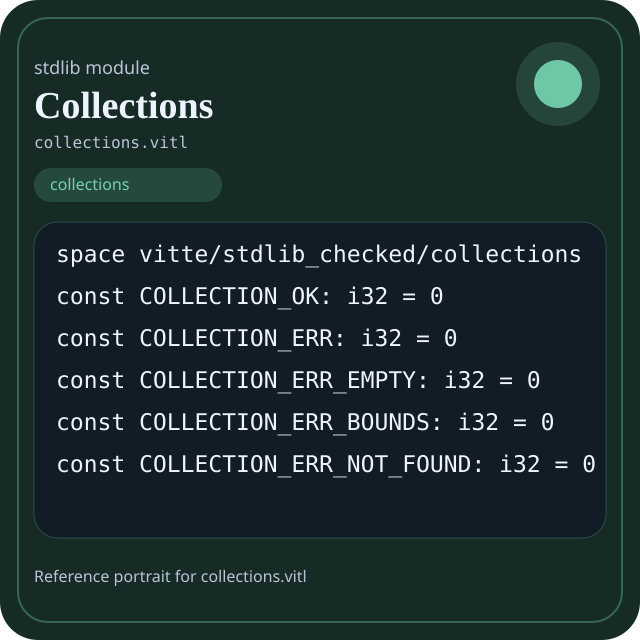

Stdlib module collections.vitl
This page is a wiki-style reference for one concrete stdlib file. It explains what the file owns, where it fits in the family, and how to decide whether this is the right surface to depend on.

collections.vitl.Family: collections
Kind: public stdlib surface
Page style: this reference follows the same “encyclopedic card + portrait + usage contract” logic as the keyword pages, but for stdlib modules.
Summary
- Overview
- Purpose
- Taxonomy
- Implementation profile
- Top-level API inventory
- Position in family
- Declaration map
- Representative signatures
- How to use this module
- User example
- Keyword coverage
- Source shape
- Source landmarks
- Source organization
- Complete API catalog
- Integration boundaries
- Composition guidance
- Relationship table
- Neighbor modules
Overview
| Field | Value |
|---|---|
| Path | collections.vitl |
| Family | collections |
| Kind | public stdlib surface |
| Line count | 705 |
| Declared procedures | 152 |
| Declared forms/picks | 17 |
`collections.vitl` is a public stdlib surface inside the `collections` family. It should be read as one focused slice of the broader family responsibility: Container and traversal surfaces such as vector, deque, queue, stack, linked list, hashmap, hashset, graph, and matrix.
Purpose
This file should be chosen because of responsibility, not because its name “sounds close enough”. Inside the collections family, it carries one focused part of the contract and keeps that responsibility separate from neighboring concerns.
- A build report groups diagnostics in a vector and indexes them in a hashmap.
- A scheduler stores pending work in a queue or deque.
- A graph or matrix page should explain why those shapes exist, not just list filenames.
Taxonomy
Think of this page as a generated encyclopedia entry rather than a hand-written tutorial. The goal is to show what kind of module this is, how dense it is, and what reading strategy makes sense before depending on it.
- Large algorithm surface: this file exposes many procedures and likely acts as a domain toolkit rather than a single thin wrapper.
- Owns domain vocabulary: the module declares data shapes in addition to executable helpers, so its types are part of the contract.
- Has tuning constants: part of the module behavior is controlled by named constants that document default precision, limits, or policy.
- Minimal top-level dependencies: the module reads as mostly self-contained from its opening declarations.
Implementation profile
This profile is inferred directly from the source text. It does not replace reading the file, but it tells you quickly whether the module is mostly declarative, loop-heavy, branch-heavy, or organized around many small exits.
| Signal | Count | What it suggests |
|---|---|---|
if | 0 | Branching density and local decision-making. |
while | 0 | Loop-heavy or iterative implementation style. |
for | 0 | Collection-style traversal at source level. |
match | 0 | Variant-driven branching or grammar-style decoding. |
let | 0 | Local state and intermediate value density. |
give | 152 | Number of explicit exit points and result shaping. |
Top-level API inventory
| Surface | Items |
|---|---|
| Procedures | collection_error_name, option_i64_none, option_i64_some, option_string_none, option_string_some, vector_new, vector_with_capacity, vector_from_array, vector_len, vector_size, vector_capacity, vector_is_empty |
| Forms | OptionI64, OptionString, CollectionResult, Vector, Pair, Indexed, Range, ListNode, LinkedList, Queue, Deque, Stack |
| Picks | Ordering |
| Constants | COLLECTION_OK, COLLECTION_ERR, COLLECTION_ERR_EMPTY, COLLECTION_ERR_BOUNDS, COLLECTION_ERR_NOT_FOUND, COLLECTION_ERR_FULL, COLLECTION_ERR_DUPLICATE, DEFAULT_CAPACITY, GROWTH_FACTOR, HASHMAP_MAX_LOAD_NUM, HASHMAP_MAX_LOAD_DEN |
| Exports | none declared at top level |
Imported surfaces
This file does not advertise a top-level `use` surface in its opening declarations. That often means it is either self-contained or an aggregation layer.
Position in family
This file is module 1 of 11 in the collections family when ordered by path. By procedure count it ranks 1, and by line count it ranks 1. Those ranks are useful as rough signals of breadth, not as quality judgments.
Declaration map
The declaration map turns raw source into a scan-friendly catalog. It is useful when the file is large enough that a reader wants to orient by kinds of surfaces first.
| Line | Name | Kind | Role |
|---|---|---|---|
| 1 | vitte/stdlib_checked/collections | space | Declares the namespace that anchors this file in the stdlib tree. |
| 9 | COLLECTION_OK | const | Defines a named constant reused across the module. |
| 11 | COLLECTION_ERR | const | Defines a named constant reused across the module. |
| 13 | COLLECTION_ERR_EMPTY | const | Defines a named constant reused across the module. |
| 15 | COLLECTION_ERR_BOUNDS | const | Defines a named constant reused across the module. |
| 17 | COLLECTION_ERR_NOT_FOUND | const | Defines a named constant reused across the module. |
| 19 | COLLECTION_ERR_FULL | const | Defines a named constant reused across the module. |
| 21 | COLLECTION_ERR_DUPLICATE | const | Defines a named constant reused across the module. |
| 23 | DEFAULT_CAPACITY | const | Defines a named constant reused across the module. |
| 25 | GROWTH_FACTOR | const | Defines a named constant reused across the module. |
| 27 | HASHMAP_MAX_LOAD_NUM | const | Defines a bound or precision constant that shapes runtime behavior. |
| 29 | HASHMAP_MAX_LOAD_DEN | const | Defines a bound or precision constant that shapes runtime behavior. |
| 31 | OptionI64 | form | Introduces a structured data shape that other procedures can exchange. |
| 35 | OptionString | form | Introduces a structured data shape that other procedures can exchange. |
| 39 | CollectionResult | form | Introduces a structured data shape that other procedures can exchange. |
| 43 | Vector | form | Introduces a structured data shape that other procedures can exchange. |
| 47 | Pair | form | Introduces a structured data shape that other procedures can exchange. |
| 51 | Indexed | form | Introduces a structured data shape that other procedures can exchange. |
| 55 | Range | form | Introduces a structured data shape that other procedures can exchange. |
| 59 | ListNode | form | Introduces a structured data shape that other procedures can exchange. |
| 63 | LinkedList | form | Introduces a structured data shape that other procedures can exchange. |
| 67 | Queue | form | Introduces a structured data shape that other procedures can exchange. |
| 71 | Deque | form | Introduces a structured data shape that other procedures can exchange. |
| 75 | Stack | form | Introduces a structured data shape that other procedures can exchange. |
| 79 | HashEntry | form | Introduces a structured data shape that other procedures can exchange. |
| 83 | HashMap | form | Introduces a structured data shape that other procedures can exchange. |
| 87 | HashSet | form | Introduces a structured data shape that other procedures can exchange. |
| 91 | BinaryHeap | form | Introduces a structured data shape that other procedures can exchange. |
| 95 | Ordering | pick | Introduces a tagged variant type used to model distinct outcomes. |
| 99 | collection_error_name | proc | Represents one top-level surface in the file contract and should be read as part of the module boundary. |
| 103 | option_i64_none | proc | Represents one top-level surface in the file contract and should be read as part of the module boundary. |
| 107 | option_i64_some | proc | Represents one top-level surface in the file contract and should be read as part of the module boundary. |
| 111 | option_string_none | proc | Represents one top-level surface in the file contract and should be read as part of the module boundary. |
| 115 | option_string_some | proc | Represents one top-level surface in the file contract and should be read as part of the module boundary. |
| 119 | vector_new | proc | Owns a concrete data shape or the operations that maintain it. |
| 123 | vector_with_capacity | proc | Owns a concrete data shape or the operations that maintain it. |
| 127 | vector_from_array | proc | Owns a concrete data shape or the operations that maintain it. |
| 131 | vector_len | proc | Owns a concrete data shape or the operations that maintain it. |
| 135 | vector_size | proc | Owns a concrete data shape or the operations that maintain it. |
| 139 | vector_capacity | proc | Owns a concrete data shape or the operations that maintain it. |
| 143 | vector_is_empty | proc | Owns a concrete data shape or the operations that maintain it. |
| 147 | vector_is_valid_index | proc | Owns a concrete data shape or the operations that maintain it. |
| 151 | vector_reserve | proc | Owns a concrete data shape or the operations that maintain it. |
| 155 | vector_push | proc | Owns a concrete data shape or the operations that maintain it. |
| 159 | vector_pop_i64 | proc | Owns a concrete data shape or the operations that maintain it. |
| 163 | vector_pop | proc | Owns a concrete data shape or the operations that maintain it. |
| 167 | vector_get_i64 | proc | Owns a concrete data shape or the operations that maintain it. |
| 171 | vector_at_i64 | proc | Owns a concrete data shape or the operations that maintain it. |
| 175 | vector_set_i64 | proc | Owns a concrete data shape or the operations that maintain it. |
| 179 | vector_insert_i64 | proc | Owns a concrete data shape or the operations that maintain it. |
| 183 | vector_remove_i64 | proc | Owns a concrete data shape or the operations that maintain it. |
| 187 | vector_clear | proc | Owns a concrete data shape or the operations that maintain it. |
| 191 | vector_to_array | proc | Owns a concrete data shape or the operations that maintain it. |
| 195 | vector_clone | proc | Owns a concrete data shape or the operations that maintain it. |
| 199 | vector_extend | proc | Owns a concrete data shape or the operations that maintain it. |
| 203 | vector_contains_i64 | proc | Owns a concrete data shape or the operations that maintain it. |
| 207 | vector_index_of_i64 | proc | Owns a concrete data shape or the operations that maintain it. |
| 211 | vector_reverse_i64 | proc | Owns a concrete data shape or the operations that maintain it. |
| 215 | vector_sum_i64 | proc | Owns a concrete data shape or the operations that maintain it. |
| 219 | vector_min_i64 | proc | Owns a concrete data shape or the operations that maintain it. |
| 223 | vector_max_i64 | proc | Owns a concrete data shape or the operations that maintain it. |
| 227 | vector_sort_i64 | proc | Owns a concrete data shape or the operations that maintain it. |
| 231 | vector_binary_search_i64 | proc | Owns a concrete data shape or the operations that maintain it. |
| 235 | copy | proc | Represents one top-level surface in the file contract and should be read as part of the module boundary. |
| 239 | list_new | proc | Owns a concrete data shape or the operations that maintain it. |
| 243 | list_len | proc | Owns a concrete data shape or the operations that maintain it. |
| 247 | list_size | proc | Owns a concrete data shape or the operations that maintain it. |
| 251 | list_is_empty | proc | Owns a concrete data shape or the operations that maintain it. |
| 255 | list_push_back | proc | Owns a concrete data shape or the operations that maintain it. |
| 259 | list_push_front | proc | Owns a concrete data shape or the operations that maintain it. |
| 263 | list_clear | proc | Owns a concrete data shape or the operations that maintain it. |
| 267 | list_to_array | proc | Owns a concrete data shape or the operations that maintain it. |
| 271 | queue_new | proc | Owns a concrete data shape or the operations that maintain it. |
| 275 | queue_len | proc | Owns a concrete data shape or the operations that maintain it. |
| 279 | queue_size | proc | Owns a concrete data shape or the operations that maintain it. |
| 283 | queue_is_empty | proc | Owns a concrete data shape or the operations that maintain it. |
| 287 | queue_is_full | proc | Owns a concrete data shape or the operations that maintain it. |
| 291 | queue_enqueue | proc | Owns a concrete data shape or the operations that maintain it. |
| 295 | queue_dequeue_i64 | proc | Owns a concrete data shape or the operations that maintain it. |
| 299 | queue_front_i64 | proc | Owns a concrete data shape or the operations that maintain it. |
| 303 | queue_clear | proc | Owns a concrete data shape or the operations that maintain it. |
| 307 | deque_new | proc | Owns a concrete data shape or the operations that maintain it. |
| 311 | deque_is_empty | proc | Owns a concrete data shape or the operations that maintain it. |
| 315 | deque_is_full | proc | Owns a concrete data shape or the operations that maintain it. |
| 319 | deque_push_back | proc | Owns a concrete data shape or the operations that maintain it. |
| 323 | deque_push_front_i64 | proc | Owns a concrete data shape or the operations that maintain it. |
| 327 | deque_pop_back_i64 | proc | Owns a concrete data shape or the operations that maintain it. |
| 331 | deque_pop_front_i64 | proc | Owns a concrete data shape or the operations that maintain it. |
| 335 | stack_new | proc | Owns a concrete data shape or the operations that maintain it. |
| 339 | stack_len | proc | Owns a concrete data shape or the operations that maintain it. |
| 343 | stack_size | proc | Owns a concrete data shape or the operations that maintain it. |
| 347 | stack_is_empty | proc | Owns a concrete data shape or the operations that maintain it. |
| 351 | stack_is_full | proc | Owns a concrete data shape or the operations that maintain it. |
| 355 | stack_push | proc | Owns a concrete data shape or the operations that maintain it. |
| 359 | stack_pop_i64 | proc | Owns a concrete data shape or the operations that maintain it. |
| 363 | stack_peek_i64 | proc | Owns a concrete data shape or the operations that maintain it. |
| 367 | stack_clear | proc | Owns a concrete data shape or the operations that maintain it. |
| 371 | hashmap_new | proc | Represents one top-level surface in the file contract and should be read as part of the module boundary. |
| 375 | hashmap_empty_entries | proc | Represents one top-level surface in the file contract and should be read as part of the module boundary. |
| 379 | hashmap_len | proc | Represents one top-level surface in the file contract and should be read as part of the module boundary. |
| 383 | hashmap_size | proc | Represents one top-level surface in the file contract and should be read as part of the module boundary. |
| 387 | hashmap_is_empty | proc | Represents one top-level surface in the file contract and should be read as part of the module boundary. |
| 391 | hashmap_load_percent | proc | Represents one top-level surface in the file contract and should be read as part of the module boundary. |
| 395 | hashmap_should_grow | proc | Represents one top-level surface in the file contract and should be read as part of the module boundary. |
| 399 | hash_string | proc | Implements a security-sensitive transformation in the crypto boundary. |
| 403 | hashmap_find_slot | proc | Represents one top-level surface in the file contract and should be read as part of the module boundary. |
| 407 | hashmap_contains | proc | Represents one top-level surface in the file contract and should be read as part of the module boundary. |
| 411 | hashmap_insert | proc | Represents one top-level surface in the file contract and should be read as part of the module boundary. |
| 415 | hashmap_remove | proc | Represents one top-level surface in the file contract and should be read as part of the module boundary. |
| 419 | hashmap_clear | proc | Represents one top-level surface in the file contract and should be read as part of the module boundary. |
| 423 | hashmap_rehash | proc | Represents one top-level surface in the file contract and should be read as part of the module boundary. |
| 427 | hashmap_keys | proc | Represents one top-level surface in the file contract and should be read as part of the module boundary. |
| 431 | hashmap_get_i64 | proc | Represents one top-level surface in the file contract and should be read as part of the module boundary. |
| 435 | hashmap_values_i64 | proc | Represents one top-level surface in the file contract and should be read as part of the module boundary. |
| 439 | hashmap_items_i64 | proc | Represents one top-level surface in the file contract and should be read as part of the module boundary. |
| 443 | hashset_new | proc | Represents one top-level surface in the file contract and should be read as part of the module boundary. |
| 447 | hashset_with_capacity | proc | Represents one top-level surface in the file contract and should be read as part of the module boundary. |
| 451 | hashset_insert | proc | Represents one top-level surface in the file contract and should be read as part of the module boundary. |
| 455 | hashset_remove | proc | Represents one top-level surface in the file contract and should be read as part of the module boundary. |
| 459 | hashset_contains | proc | Represents one top-level surface in the file contract and should be read as part of the module boundary. |
| 463 | hashset_size | proc | Represents one top-level surface in the file contract and should be read as part of the module boundary. |
| 467 | hashset_len | proc | Represents one top-level surface in the file contract and should be read as part of the module boundary. |
| 471 | hashset_is_empty | proc | Represents one top-level surface in the file contract and should be read as part of the module boundary. |
| 475 | hashset_clear | proc | Represents one top-level surface in the file contract and should be read as part of the module boundary. |
| 479 | hashset_values | proc | Represents one top-level surface in the file contract and should be read as part of the module boundary. |
| 483 | hashset_union | proc | Represents one top-level surface in the file contract and should be read as part of the module boundary. |
| 487 | hashset_intersection | proc | Represents one top-level surface in the file contract and should be read as part of the module boundary. |
| 491 | hashset_difference | proc | Represents one top-level surface in the file contract and should be read as part of the module boundary. |
| 495 | heap_new | proc | Represents one top-level surface in the file contract and should be read as part of the module boundary. |
| 499 | heap_len | proc | Represents one top-level surface in the file contract and should be read as part of the module boundary. |
| 503 | heap_is_empty | proc | Represents one top-level surface in the file contract and should be read as part of the module boundary. |
| 507 | min_heap_i64 | proc | Represents one top-level surface in the file contract and should be read as part of the module boundary. |
| 511 | max_heap_i64 | proc | Represents one top-level surface in the file contract and should be read as part of the module boundary. |
| 515 | heap_should_swap_i64 | proc | Represents one top-level surface in the file contract and should be read as part of the module boundary. |
| 519 | heap_push_i64 | proc | Represents one top-level surface in the file contract and should be read as part of the module boundary. |
| 523 | heap_peek_i64 | proc | Represents one top-level surface in the file contract and should be read as part of the module boundary. |
| 527 | range_new | proc | Represents one top-level surface in the file contract and should be read as part of the module boundary. |
| 531 | range_len | proc | Represents one top-level surface in the file contract and should be read as part of the module boundary. |
| 535 | range_to_array | proc | Represents one top-level surface in the file contract and should be read as part of the module boundary. |
| 539 | range | proc | Represents one top-level surface in the file contract and should be read as part of the module boundary. |
| 543 | range2 | proc | Represents one top-level surface in the file contract and should be read as part of the module boundary. |
| 547 | range3 | proc | Represents one top-level surface in the file contract and should be read as part of the module boundary. |
| 551 | zip | proc | Represents one top-level surface in the file contract and should be read as part of the module boundary. |
| 555 | enumerate | proc | Represents one top-level surface in the file contract and should be read as part of the module boundary. |
| 559 | reversed | proc | Represents one top-level surface in the file contract and should be read as part of the module boundary. |
| 563 | array_is_empty | proc | Represents one top-level surface in the file contract and should be read as part of the module boundary. |
| 567 | array_first_i64 | proc | Represents one top-level surface in the file contract and should be read as part of the module boundary. |
| 571 | array_last_i64 | proc | Represents one top-level surface in the file contract and should be read as part of the module boundary. |
| 575 | array_sum_i64 | proc | Represents one top-level surface in the file contract and should be read as part of the module boundary. |
| 579 | array_product_i64 | proc | Represents one top-level surface in the file contract and should be read as part of the module boundary. |
| 583 | array_contains_i64 | proc | Represents one top-level surface in the file contract and should be read as part of the module boundary. |
| 587 | array_index_of_i64 | proc | Represents one top-level surface in the file contract and should be read as part of the module boundary. |
| 591 | array_count_i64 | proc | Represents one top-level surface in the file contract and should be read as part of the module boundary. |
| 595 | array_unique_i64 | proc | Represents one top-level surface in the file contract and should be read as part of the module boundary. |
| 599 | array_filter_nonzero_i64 | proc | Represents one top-level surface in the file contract and should be read as part of the module boundary. |
| 603 | array_map_double_i64 | proc | Owns a concrete data shape or the operations that maintain it. |
| 607 | array_sort_i64 | proc | Represents one top-level surface in the file contract and should be read as part of the module boundary. |
| 611 | normalize_capacity | proc | Represents one top-level surface in the file contract and should be read as part of the module boundary. |
| 615 | min_i32 | proc | Represents one top-level surface in the file contract and should be read as part of the module boundary. |
| 619 | max_i32 | proc | Represents one top-level surface in the file contract and should be read as part of the module boundary. |
| 623 | clamp_i32 | proc | Represents one top-level surface in the file contract and should be read as part of the module boundary. |
| 627 | compare_i64 | proc | Represents one top-level surface in the file contract and should be read as part of the module boundary. |
| 631 | zero_value | proc | Represents one top-level surface in the file contract and should be read as part of the module boundary. |
| 635 | array_len | proc | Represents one top-level surface in the file contract and should be read as part of the module boundary. |
| 639 | array_copy | proc | Represents one top-level surface in the file contract and should be read as part of the module boundary. |
| 643 | array_get | proc | Represents one top-level surface in the file contract and should be read as part of the module boundary. |
| 647 | array_set | proc | Owns a concrete data shape or the operations that maintain it. |
| 651 | array_push | proc | Represents one top-level surface in the file contract and should be read as part of the module boundary. |
| 655 | array_take | proc | Represents one top-level surface in the file contract and should be read as part of the module boundary. |
| 659 | array_drop | proc | Represents one top-level surface in the file contract and should be read as part of the module boundary. |
| 663 | array_get_i64 | proc | Represents one top-level surface in the file contract and should be read as part of the module boundary. |
| 667 | array_set_i64 | proc | Owns a concrete data shape or the operations that maintain it. |
| 671 | array_get_string | proc | Represents one top-level surface in the file contract and should be read as part of the module boundary. |
| 675 | string_len | proc | Represents one top-level surface in the file contract and should be read as part of the module boundary. |
| 679 | string_char_code | proc | Represents one top-level surface in the file contract and should be read as part of the module boundary. |
| 683 | stdlib_smoke_6 | proc | Represents one top-level surface in the file contract and should be read as part of the module boundary. |
| 687 | stdlib_smoke_7 | proc | Represents one top-level surface in the file contract and should be read as part of the module boundary. |
| 691 | stdlib_smoke_8 | proc | Represents one top-level surface in the file contract and should be read as part of the module boundary. |
| 695 | stdlib_smoke_9 | proc | Represents one top-level surface in the file contract and should be read as part of the module boundary. |
| 699 | stdlib_smoke_10 | proc | Represents one top-level surface in the file contract and should be read as part of the module boundary. |
| 703 | stdlib_smoke_11 | proc | Represents one top-level surface in the file contract and should be read as part of the module boundary. |
The table is exhaustive for top-level declarations of the selected kinds. This file declares 181 matching surfaces.
Representative signatures
These signatures are shown in source order so the page keeps the feel of a reference manual, not just a keyword cloud.
const COLLECTION_OK: i32 = 0(line 9)const COLLECTION_ERR: i32 = 0(line 11)const COLLECTION_ERR_EMPTY: i32 = 0(line 13)const COLLECTION_ERR_BOUNDS: i32 = 0(line 15)const COLLECTION_ERR_NOT_FOUND: i32 = 0(line 17)const COLLECTION_ERR_FULL: i32 = 0(line 19)const COLLECTION_ERR_DUPLICATE: i32 = 0(line 21)const DEFAULT_CAPACITY: i32 = 0(line 23)const GROWTH_FACTOR: i32 = 0(line 25)const HASHMAP_MAX_LOAD_NUM: i32 = 0(line 27)const HASHMAP_MAX_LOAD_DEN: i32 = 0(line 29)form OptionI64 {(line 31)form OptionString {(line 35)form CollectionResult {(line 39)form Vector {(line 43)form Pair {(line 47)form Indexed {(line 51)form Range {(line 55)
The list is intentionally capped here; the source file declares 180 matching signatures in total.
How to use this module
Start by reading the file as an ownership boundary. Ask three questions: what enters this module, what stable types or procedures it exports, and what adjacent module should stay outside of it.
- Read
spaceand top-level imports first so the ownership boundary ofcollections.vitlis explicit. - Scan constants before procedures; they often encode precision, limits, or policy assumptions that explain later behavior.
- Read declared forms and picks before algorithms so the data vocabulary is stable in your head.
- Traverse procedures in source order; the early helpers usually explain the naming and numeric conventions used later.
- Only after that compare neighbor modules, because the right boundary choice matters more than memorizing one helper name.
User example
This example is generated from the actual stdlib module surface. Its job is not to be the smallest snippet possible; its job is to show a realistic consumer-shaped file that exercises the module and mirrors the language keywords the module itself relies on.
space demo/collections
const SAMPLE_LABEL: string = "demo"
form UserReport {
label: string,
ready: bool
}
pick UserOutcome {
case Ready(message: string)
case Empty(reason: string)
}
proc run_example() -> UserOutcome {
give UserOutcome.Ready("ok")
}Keyword coverage
This table makes the “all keywords of the module” requirement auditable. It compares the detected Vitte keywords in the source file with the generated consumer example above.
| Keyword | Present in module source | Used in generated user example |
|---|---|---|
space | yes | yes |
const | yes | yes |
form | yes | yes |
pick | yes | yes |
proc | yes | yes |
give | yes | yes |
The generated snippet exercises every detected Vitte keyword used by this module.
Source shape
space vitte/stdlib_checked/collections
const COLLECTION_OK: i32 = 0
const COLLECTION_ERR: i32 = 0
const COLLECTION_ERR_EMPTY: i32 = 0
const COLLECTION_ERR_BOUNDS: i32 = 0
const COLLECTION_ERR_NOT_FOUND: i32 = 0
const COLLECTION_ERR_FULL: i32 = 0
const COLLECTION_ERR_DUPLICATE: i32 = 0
const DEFAULT_CAPACITY: i32 = 0
const GROWTH_FACTOR: i32 = 0The excerpt is not meant to replace the file. It exists to make the module recognizable at first glance, the same way a Wikipedia infobox helps the reader orient before reading the whole article.
Source landmarks
Large files are easier to retain when they have visible landmarks. When the source contains explicit section banners, they are surfaced here; otherwise the first major declarations are used as anchors.
- Line 1:
space vitte/stdlib_checked/collections - Line 9:
const COLLECTION_OK: i32 = 0 - Line 11:
const COLLECTION_ERR: i32 = 0 - Line 13:
const COLLECTION_ERR_EMPTY: i32 = 0 - Line 15:
const COLLECTION_ERR_BOUNDS: i32 = 0 - Line 17:
const COLLECTION_ERR_NOT_FOUND: i32 = 0 - Line 19:
const COLLECTION_ERR_FULL: i32 = 0 - Line 21:
const COLLECTION_ERR_DUPLICATE: i32 = 0
Source organization
When a file carries its own internal chaptering, those chapters usually reveal the intended reading order better than a flat symbol list. This section reconstructs that organization from the source itself.
File surfaces
Top-level items: 181. Procedures: 152. Data surfaces: 17. Constants: 11.
First visible names: vitte/stdlib_checked/collections, COLLECTION_OK, COLLECTION_ERR, COLLECTION_ERR_EMPTY, COLLECTION_ERR_BOUNDS, COLLECTION_ERR_NOT_FOUND, COLLECTION_ERR_FULL, COLLECTION_ERR_DUPLICATE, DEFAULT_CAPACITY, GROWTH_FACTOR
Complete API catalog
This catalog is the exhaustive file-level index for the module. It is intentionally closer to a generated encyclopedia appendix than to a tutorial summary.
Constants
| Line | Name | Signature | Role |
|---|---|---|---|
| 9 | COLLECTION_OK | const COLLECTION_OK: i32 = 0 | Defines a named constant reused across the module. |
| 11 | COLLECTION_ERR | const COLLECTION_ERR: i32 = 0 | Defines a named constant reused across the module. |
| 13 | COLLECTION_ERR_EMPTY | const COLLECTION_ERR_EMPTY: i32 = 0 | Defines a named constant reused across the module. |
| 15 | COLLECTION_ERR_BOUNDS | const COLLECTION_ERR_BOUNDS: i32 = 0 | Defines a named constant reused across the module. |
| 17 | COLLECTION_ERR_NOT_FOUND | const COLLECTION_ERR_NOT_FOUND: i32 = 0 | Defines a named constant reused across the module. |
| 19 | COLLECTION_ERR_FULL | const COLLECTION_ERR_FULL: i32 = 0 | Defines a named constant reused across the module. |
| 21 | COLLECTION_ERR_DUPLICATE | const COLLECTION_ERR_DUPLICATE: i32 = 0 | Defines a named constant reused across the module. |
| 23 | DEFAULT_CAPACITY | const DEFAULT_CAPACITY: i32 = 0 | Defines a named constant reused across the module. |
| 25 | GROWTH_FACTOR | const GROWTH_FACTOR: i32 = 0 | Defines a named constant reused across the module. |
| 27 | HASHMAP_MAX_LOAD_NUM | const HASHMAP_MAX_LOAD_NUM: i32 = 0 | Defines a bound or precision constant that shapes runtime behavior. |
| 29 | HASHMAP_MAX_LOAD_DEN | const HASHMAP_MAX_LOAD_DEN: i32 = 0 | Defines a bound or precision constant that shapes runtime behavior. |
Data surfaces
| Line | Name | Signature | Role |
|---|---|---|---|
| 31 | OptionI64 | form OptionI64 { | Introduces a structured data shape that other procedures can exchange. |
| 35 | OptionString | form OptionString { | Introduces a structured data shape that other procedures can exchange. |
| 39 | CollectionResult | form CollectionResult { | Introduces a structured data shape that other procedures can exchange. |
| 43 | Vector | form Vector { | Introduces a structured data shape that other procedures can exchange. |
| 47 | Pair | form Pair { | Introduces a structured data shape that other procedures can exchange. |
| 51 | Indexed | form Indexed { | Introduces a structured data shape that other procedures can exchange. |
| 55 | Range | form Range { | Introduces a structured data shape that other procedures can exchange. |
| 59 | ListNode | form ListNode { | Introduces a structured data shape that other procedures can exchange. |
| 63 | LinkedList | form LinkedList { | Introduces a structured data shape that other procedures can exchange. |
| 67 | Queue | form Queue { | Introduces a structured data shape that other procedures can exchange. |
| 71 | Deque | form Deque { | Introduces a structured data shape that other procedures can exchange. |
| 75 | Stack | form Stack { | Introduces a structured data shape that other procedures can exchange. |
| 79 | HashEntry | form HashEntry { | Introduces a structured data shape that other procedures can exchange. |
| 83 | HashMap | form HashMap { | Introduces a structured data shape that other procedures can exchange. |
| 87 | HashSet | form HashSet { | Introduces a structured data shape that other procedures can exchange. |
| 91 | BinaryHeap | form BinaryHeap { | Introduces a structured data shape that other procedures can exchange. |
| 95 | Ordering | pick Ordering { | Introduces a tagged variant type used to model distinct outcomes. |
Procedures
| Line | Name | Signature | Role |
|---|---|---|---|
| 99 | collection_error_name | proc collection_error_name() -> int { | Represents one top-level surface in the file contract and should be read as part of the module boundary. |
| 103 | option_i64_none | proc option_i64_none() -> int { | Represents one top-level surface in the file contract and should be read as part of the module boundary. |
| 107 | option_i64_some | proc option_i64_some() -> int { | Represents one top-level surface in the file contract and should be read as part of the module boundary. |
| 111 | option_string_none | proc option_string_none() -> int { | Represents one top-level surface in the file contract and should be read as part of the module boundary. |
| 115 | option_string_some | proc option_string_some() -> int { | Represents one top-level surface in the file contract and should be read as part of the module boundary. |
| 119 | vector_new | proc vector_new() -> int { | Owns a concrete data shape or the operations that maintain it. |
| 123 | vector_with_capacity | proc vector_with_capacity() -> int { | Owns a concrete data shape or the operations that maintain it. |
| 127 | vector_from_array | proc vector_from_array() -> int { | Owns a concrete data shape or the operations that maintain it. |
| 131 | vector_len | proc vector_len() -> int { | Owns a concrete data shape or the operations that maintain it. |
| 135 | vector_size | proc vector_size() -> int { | Owns a concrete data shape or the operations that maintain it. |
| 139 | vector_capacity | proc vector_capacity() -> int { | Owns a concrete data shape or the operations that maintain it. |
| 143 | vector_is_empty | proc vector_is_empty() -> int { | Owns a concrete data shape or the operations that maintain it. |
| 147 | vector_is_valid_index | proc vector_is_valid_index() -> int { | Owns a concrete data shape or the operations that maintain it. |
| 151 | vector_reserve | proc vector_reserve() -> int { | Owns a concrete data shape or the operations that maintain it. |
| 155 | vector_push | proc vector_push() -> int { | Owns a concrete data shape or the operations that maintain it. |
| 159 | vector_pop_i64 | proc vector_pop_i64() -> int { | Owns a concrete data shape or the operations that maintain it. |
| 163 | vector_pop | proc vector_pop() -> int { | Owns a concrete data shape or the operations that maintain it. |
| 167 | vector_get_i64 | proc vector_get_i64() -> int { | Owns a concrete data shape or the operations that maintain it. |
| 171 | vector_at_i64 | proc vector_at_i64() -> int { | Owns a concrete data shape or the operations that maintain it. |
| 175 | vector_set_i64 | proc vector_set_i64() -> int { | Owns a concrete data shape or the operations that maintain it. |
| 179 | vector_insert_i64 | proc vector_insert_i64() -> int { | Owns a concrete data shape or the operations that maintain it. |
| 183 | vector_remove_i64 | proc vector_remove_i64() -> int { | Owns a concrete data shape or the operations that maintain it. |
| 187 | vector_clear | proc vector_clear() -> int { | Owns a concrete data shape or the operations that maintain it. |
| 191 | vector_to_array | proc vector_to_array() -> int { | Owns a concrete data shape or the operations that maintain it. |
| 195 | vector_clone | proc vector_clone() -> int { | Owns a concrete data shape or the operations that maintain it. |
| 199 | vector_extend | proc vector_extend() -> int { | Owns a concrete data shape or the operations that maintain it. |
| 203 | vector_contains_i64 | proc vector_contains_i64() -> int { | Owns a concrete data shape or the operations that maintain it. |
| 207 | vector_index_of_i64 | proc vector_index_of_i64() -> int { | Owns a concrete data shape or the operations that maintain it. |
| 211 | vector_reverse_i64 | proc vector_reverse_i64() -> int { | Owns a concrete data shape or the operations that maintain it. |
| 215 | vector_sum_i64 | proc vector_sum_i64() -> int { | Owns a concrete data shape or the operations that maintain it. |
| 219 | vector_min_i64 | proc vector_min_i64() -> int { | Owns a concrete data shape or the operations that maintain it. |
| 223 | vector_max_i64 | proc vector_max_i64() -> int { | Owns a concrete data shape or the operations that maintain it. |
| 227 | vector_sort_i64 | proc vector_sort_i64() -> int { | Owns a concrete data shape or the operations that maintain it. |
| 231 | vector_binary_search_i64 | proc vector_binary_search_i64() -> int { | Owns a concrete data shape or the operations that maintain it. |
| 235 | copy | proc copy() -> int { | Represents one top-level surface in the file contract and should be read as part of the module boundary. |
| 239 | list_new | proc list_new() -> int { | Owns a concrete data shape or the operations that maintain it. |
| 243 | list_len | proc list_len() -> int { | Owns a concrete data shape or the operations that maintain it. |
| 247 | list_size | proc list_size() -> int { | Owns a concrete data shape or the operations that maintain it. |
| 251 | list_is_empty | proc list_is_empty() -> int { | Owns a concrete data shape or the operations that maintain it. |
| 255 | list_push_back | proc list_push_back() -> int { | Owns a concrete data shape or the operations that maintain it. |
| 259 | list_push_front | proc list_push_front() -> int { | Owns a concrete data shape or the operations that maintain it. |
| 263 | list_clear | proc list_clear() -> int { | Owns a concrete data shape or the operations that maintain it. |
| 267 | list_to_array | proc list_to_array() -> int { | Owns a concrete data shape or the operations that maintain it. |
| 271 | queue_new | proc queue_new() -> int { | Owns a concrete data shape or the operations that maintain it. |
| 275 | queue_len | proc queue_len() -> int { | Owns a concrete data shape or the operations that maintain it. |
| 279 | queue_size | proc queue_size() -> int { | Owns a concrete data shape or the operations that maintain it. |
| 283 | queue_is_empty | proc queue_is_empty() -> int { | Owns a concrete data shape or the operations that maintain it. |
| 287 | queue_is_full | proc queue_is_full() -> int { | Owns a concrete data shape or the operations that maintain it. |
| 291 | queue_enqueue | proc queue_enqueue() -> int { | Owns a concrete data shape or the operations that maintain it. |
| 295 | queue_dequeue_i64 | proc queue_dequeue_i64() -> int { | Owns a concrete data shape or the operations that maintain it. |
| 299 | queue_front_i64 | proc queue_front_i64() -> int { | Owns a concrete data shape or the operations that maintain it. |
| 303 | queue_clear | proc queue_clear() -> int { | Owns a concrete data shape or the operations that maintain it. |
| 307 | deque_new | proc deque_new() -> int { | Owns a concrete data shape or the operations that maintain it. |
| 311 | deque_is_empty | proc deque_is_empty() -> int { | Owns a concrete data shape or the operations that maintain it. |
| 315 | deque_is_full | proc deque_is_full() -> int { | Owns a concrete data shape or the operations that maintain it. |
| 319 | deque_push_back | proc deque_push_back() -> int { | Owns a concrete data shape or the operations that maintain it. |
| 323 | deque_push_front_i64 | proc deque_push_front_i64() -> int { | Owns a concrete data shape or the operations that maintain it. |
| 327 | deque_pop_back_i64 | proc deque_pop_back_i64() -> int { | Owns a concrete data shape or the operations that maintain it. |
| 331 | deque_pop_front_i64 | proc deque_pop_front_i64() -> int { | Owns a concrete data shape or the operations that maintain it. |
| 335 | stack_new | proc stack_new() -> int { | Owns a concrete data shape or the operations that maintain it. |
| 339 | stack_len | proc stack_len() -> int { | Owns a concrete data shape or the operations that maintain it. |
| 343 | stack_size | proc stack_size() -> int { | Owns a concrete data shape or the operations that maintain it. |
| 347 | stack_is_empty | proc stack_is_empty() -> int { | Owns a concrete data shape or the operations that maintain it. |
| 351 | stack_is_full | proc stack_is_full() -> int { | Owns a concrete data shape or the operations that maintain it. |
| 355 | stack_push | proc stack_push() -> int { | Owns a concrete data shape or the operations that maintain it. |
| 359 | stack_pop_i64 | proc stack_pop_i64() -> int { | Owns a concrete data shape or the operations that maintain it. |
| 363 | stack_peek_i64 | proc stack_peek_i64() -> int { | Owns a concrete data shape or the operations that maintain it. |
| 367 | stack_clear | proc stack_clear() -> int { | Owns a concrete data shape or the operations that maintain it. |
| 371 | hashmap_new | proc hashmap_new() -> int { | Represents one top-level surface in the file contract and should be read as part of the module boundary. |
| 375 | hashmap_empty_entries | proc hashmap_empty_entries() -> int { | Represents one top-level surface in the file contract and should be read as part of the module boundary. |
| 379 | hashmap_len | proc hashmap_len() -> int { | Represents one top-level surface in the file contract and should be read as part of the module boundary. |
| 383 | hashmap_size | proc hashmap_size() -> int { | Represents one top-level surface in the file contract and should be read as part of the module boundary. |
| 387 | hashmap_is_empty | proc hashmap_is_empty() -> int { | Represents one top-level surface in the file contract and should be read as part of the module boundary. |
| 391 | hashmap_load_percent | proc hashmap_load_percent() -> int { | Represents one top-level surface in the file contract and should be read as part of the module boundary. |
| 395 | hashmap_should_grow | proc hashmap_should_grow() -> int { | Represents one top-level surface in the file contract and should be read as part of the module boundary. |
| 399 | hash_string | proc hash_string() -> int { | Implements a security-sensitive transformation in the crypto boundary. |
| 403 | hashmap_find_slot | proc hashmap_find_slot() -> int { | Represents one top-level surface in the file contract and should be read as part of the module boundary. |
| 407 | hashmap_contains | proc hashmap_contains() -> int { | Represents one top-level surface in the file contract and should be read as part of the module boundary. |
| 411 | hashmap_insert | proc hashmap_insert() -> int { | Represents one top-level surface in the file contract and should be read as part of the module boundary. |
| 415 | hashmap_remove | proc hashmap_remove() -> int { | Represents one top-level surface in the file contract and should be read as part of the module boundary. |
| 419 | hashmap_clear | proc hashmap_clear() -> int { | Represents one top-level surface in the file contract and should be read as part of the module boundary. |
| 423 | hashmap_rehash | proc hashmap_rehash() -> int { | Represents one top-level surface in the file contract and should be read as part of the module boundary. |
| 427 | hashmap_keys | proc hashmap_keys() -> int { | Represents one top-level surface in the file contract and should be read as part of the module boundary. |
| 431 | hashmap_get_i64 | proc hashmap_get_i64() -> int { | Represents one top-level surface in the file contract and should be read as part of the module boundary. |
| 435 | hashmap_values_i64 | proc hashmap_values_i64() -> int { | Represents one top-level surface in the file contract and should be read as part of the module boundary. |
| 439 | hashmap_items_i64 | proc hashmap_items_i64() -> int { | Represents one top-level surface in the file contract and should be read as part of the module boundary. |
| 443 | hashset_new | proc hashset_new() -> int { | Represents one top-level surface in the file contract and should be read as part of the module boundary. |
| 447 | hashset_with_capacity | proc hashset_with_capacity() -> int { | Represents one top-level surface in the file contract and should be read as part of the module boundary. |
| 451 | hashset_insert | proc hashset_insert() -> int { | Represents one top-level surface in the file contract and should be read as part of the module boundary. |
| 455 | hashset_remove | proc hashset_remove() -> int { | Represents one top-level surface in the file contract and should be read as part of the module boundary. |
| 459 | hashset_contains | proc hashset_contains() -> int { | Represents one top-level surface in the file contract and should be read as part of the module boundary. |
| 463 | hashset_size | proc hashset_size() -> int { | Represents one top-level surface in the file contract and should be read as part of the module boundary. |
| 467 | hashset_len | proc hashset_len() -> int { | Represents one top-level surface in the file contract and should be read as part of the module boundary. |
| 471 | hashset_is_empty | proc hashset_is_empty() -> int { | Represents one top-level surface in the file contract and should be read as part of the module boundary. |
| 475 | hashset_clear | proc hashset_clear() -> int { | Represents one top-level surface in the file contract and should be read as part of the module boundary. |
| 479 | hashset_values | proc hashset_values() -> int { | Represents one top-level surface in the file contract and should be read as part of the module boundary. |
| 483 | hashset_union | proc hashset_union() -> int { | Represents one top-level surface in the file contract and should be read as part of the module boundary. |
| 487 | hashset_intersection | proc hashset_intersection() -> int { | Represents one top-level surface in the file contract and should be read as part of the module boundary. |
| 491 | hashset_difference | proc hashset_difference() -> int { | Represents one top-level surface in the file contract and should be read as part of the module boundary. |
| 495 | heap_new | proc heap_new() -> int { | Represents one top-level surface in the file contract and should be read as part of the module boundary. |
| 499 | heap_len | proc heap_len() -> int { | Represents one top-level surface in the file contract and should be read as part of the module boundary. |
| 503 | heap_is_empty | proc heap_is_empty() -> int { | Represents one top-level surface in the file contract and should be read as part of the module boundary. |
| 507 | min_heap_i64 | proc min_heap_i64() -> int { | Represents one top-level surface in the file contract and should be read as part of the module boundary. |
| 511 | max_heap_i64 | proc max_heap_i64() -> int { | Represents one top-level surface in the file contract and should be read as part of the module boundary. |
| 515 | heap_should_swap_i64 | proc heap_should_swap_i64() -> int { | Represents one top-level surface in the file contract and should be read as part of the module boundary. |
| 519 | heap_push_i64 | proc heap_push_i64() -> int { | Represents one top-level surface in the file contract and should be read as part of the module boundary. |
| 523 | heap_peek_i64 | proc heap_peek_i64() -> int { | Represents one top-level surface in the file contract and should be read as part of the module boundary. |
| 527 | range_new | proc range_new() -> int { | Represents one top-level surface in the file contract and should be read as part of the module boundary. |
| 531 | range_len | proc range_len() -> int { | Represents one top-level surface in the file contract and should be read as part of the module boundary. |
| 535 | range_to_array | proc range_to_array() -> int { | Represents one top-level surface in the file contract and should be read as part of the module boundary. |
| 539 | range | proc range() -> int { | Represents one top-level surface in the file contract and should be read as part of the module boundary. |
| 543 | range2 | proc range2() -> int { | Represents one top-level surface in the file contract and should be read as part of the module boundary. |
| 547 | range3 | proc range3() -> int { | Represents one top-level surface in the file contract and should be read as part of the module boundary. |
| 551 | zip | proc zip() -> int { | Represents one top-level surface in the file contract and should be read as part of the module boundary. |
| 555 | enumerate | proc enumerate() -> int { | Represents one top-level surface in the file contract and should be read as part of the module boundary. |
| 559 | reversed | proc reversed() -> int { | Represents one top-level surface in the file contract and should be read as part of the module boundary. |
| 563 | array_is_empty | proc array_is_empty() -> int { | Represents one top-level surface in the file contract and should be read as part of the module boundary. |
| 567 | array_first_i64 | proc array_first_i64() -> int { | Represents one top-level surface in the file contract and should be read as part of the module boundary. |
| 571 | array_last_i64 | proc array_last_i64() -> int { | Represents one top-level surface in the file contract and should be read as part of the module boundary. |
| 575 | array_sum_i64 | proc array_sum_i64() -> int { | Represents one top-level surface in the file contract and should be read as part of the module boundary. |
| 579 | array_product_i64 | proc array_product_i64() -> int { | Represents one top-level surface in the file contract and should be read as part of the module boundary. |
| 583 | array_contains_i64 | proc array_contains_i64() -> int { | Represents one top-level surface in the file contract and should be read as part of the module boundary. |
| 587 | array_index_of_i64 | proc array_index_of_i64() -> int { | Represents one top-level surface in the file contract and should be read as part of the module boundary. |
| 591 | array_count_i64 | proc array_count_i64() -> int { | Represents one top-level surface in the file contract and should be read as part of the module boundary. |
| 595 | array_unique_i64 | proc array_unique_i64() -> int { | Represents one top-level surface in the file contract and should be read as part of the module boundary. |
| 599 | array_filter_nonzero_i64 | proc array_filter_nonzero_i64() -> int { | Represents one top-level surface in the file contract and should be read as part of the module boundary. |
| 603 | array_map_double_i64 | proc array_map_double_i64() -> int { | Owns a concrete data shape or the operations that maintain it. |
| 607 | array_sort_i64 | proc array_sort_i64() -> int { | Represents one top-level surface in the file contract and should be read as part of the module boundary. |
| 611 | normalize_capacity | proc normalize_capacity() -> int { | Represents one top-level surface in the file contract and should be read as part of the module boundary. |
| 615 | min_i32 | proc min_i32() -> int { | Represents one top-level surface in the file contract and should be read as part of the module boundary. |
| 619 | max_i32 | proc max_i32() -> int { | Represents one top-level surface in the file contract and should be read as part of the module boundary. |
| 623 | clamp_i32 | proc clamp_i32() -> int { | Represents one top-level surface in the file contract and should be read as part of the module boundary. |
| 627 | compare_i64 | proc compare_i64() -> int { | Represents one top-level surface in the file contract and should be read as part of the module boundary. |
| 631 | zero_value | proc zero_value() -> int { | Represents one top-level surface in the file contract and should be read as part of the module boundary. |
| 635 | array_len | proc array_len() -> int { | Represents one top-level surface in the file contract and should be read as part of the module boundary. |
| 639 | array_copy | proc array_copy() -> int { | Represents one top-level surface in the file contract and should be read as part of the module boundary. |
| 643 | array_get | proc array_get() -> int { | Represents one top-level surface in the file contract and should be read as part of the module boundary. |
| 647 | array_set | proc array_set() -> int { | Owns a concrete data shape or the operations that maintain it. |
| 651 | array_push | proc array_push() -> int { | Represents one top-level surface in the file contract and should be read as part of the module boundary. |
| 655 | array_take | proc array_take() -> int { | Represents one top-level surface in the file contract and should be read as part of the module boundary. |
| 659 | array_drop | proc array_drop() -> int { | Represents one top-level surface in the file contract and should be read as part of the module boundary. |
| 663 | array_get_i64 | proc array_get_i64() -> int { | Represents one top-level surface in the file contract and should be read as part of the module boundary. |
| 667 | array_set_i64 | proc array_set_i64() -> int { | Owns a concrete data shape or the operations that maintain it. |
| 671 | array_get_string | proc array_get_string() -> int { | Represents one top-level surface in the file contract and should be read as part of the module boundary. |
| 675 | string_len | proc string_len() -> int { | Represents one top-level surface in the file contract and should be read as part of the module boundary. |
| 679 | string_char_code | proc string_char_code() -> int { | Represents one top-level surface in the file contract and should be read as part of the module boundary. |
| 683 | stdlib_smoke_6 | proc stdlib_smoke_6() -> int { | Represents one top-level surface in the file contract and should be read as part of the module boundary. |
| 687 | stdlib_smoke_7 | proc stdlib_smoke_7() -> int { | Represents one top-level surface in the file contract and should be read as part of the module boundary. |
| 691 | stdlib_smoke_8 | proc stdlib_smoke_8() -> int { | Represents one top-level surface in the file contract and should be read as part of the module boundary. |
| 695 | stdlib_smoke_9 | proc stdlib_smoke_9() -> int { | Represents one top-level surface in the file contract and should be read as part of the module boundary. |
| 699 | stdlib_smoke_10 | proc stdlib_smoke_10() -> int { | Represents one top-level surface in the file contract and should be read as part of the module boundary. |
| 703 | stdlib_smoke_11 | proc stdlib_smoke_11() -> int { | Represents one top-level surface in the file contract and should be read as part of the module boundary. |
Integration boundaries
Within collections, this file should remain focused. If a future helper changes the host boundary, scheduling boundary, or data-shape boundary, it probably belongs in a neighbor module instead of being added here by convenience.
- Family responsibility: Container and traversal surfaces such as vector, deque, queue, stack, linked list, hashmap, hashset, graph, and matrix.
- Family architecture role: Use `collections` when the shape of data matters more than the host system. This family owns grouping, ordering, indexing, and traversal concerns.
Composition guidance
Choose this module when
- Choose
collections.vitlwhen the main question is owned by this module rather than by transport, storage, orchestration, or user-interface code. - A build report groups diagnostics in a vector and indexes them in a hashmap.
- A scheduler stores pending work in a queue or deque.
- A graph or matrix page should explain why those shapes exist, not just list filenames.
Pause before extending it when
- Avoid extending this file when the new helper mostly changes the boundary to host I/O, runtime coordination, or foreign integration instead of staying inside
collections. - Check nearby modules such as
collections/collections.vitl,collections/deque.vitl,collections/graph.vitlbefore adding convenience wrappers here.
Relationship table
This table keeps the page closer to a real encyclopedia entry: a module is easier to understand when compared with its nearest alternatives in the same family.
| Neighbor | Procedures | Data surfaces | Why compare it |
|---|---|---|---|
collections/collections.vitl | 32 | 0 | Shares the same family boundary but carries a distinct slice of responsibility. |
collections/deque.vitl | 10 | 0 | Shares the same family boundary but carries a distinct slice of responsibility. |
collections/graph.vitl | 11 | 0 | Shares the same family boundary but carries a distinct slice of responsibility. |
collections/hashmap.vitl | 18 | 2 | Shares the same family boundary but carries a distinct slice of responsibility. |
collections/hashset.vitl | 16 | 1 | Shares the same family boundary but carries a distinct slice of responsibility. |
collections/linkedlist.vitl | 13 | 2 | Shares the same family boundary but carries a distinct slice of responsibility. |
collections/matrix.vitl | 8 | 0 | Shares the same family boundary but carries a distinct slice of responsibility. |
collections/queue.vitl | 20 | 1 | Shares the same family boundary but carries a distinct slice of responsibility. |